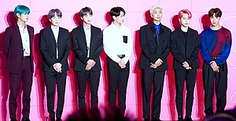
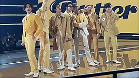
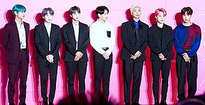
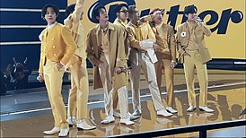

O BTS era originalmente um grupo de hip-hop semelhante ao 1TYM da YG Entertainment, mas entre a sua formação inicial e a sua estreia, Bang Si-hyuk decidiu que os jovens contemporâneos precisavam de "um herói que pudesse lhes dar um ombro para se apoiar, mesmo sem falar uma palavra".
O grupo debutou como Bangtan Boys oficialmente no dia 11 de junho de 2013 com o videoclipe de "No More Dream". Juntamente com o videoclipe, também foi lançando o single álbum 2 COOL 4 SKOOL.[29] Em 16 de julho foi lançado o videoclipe para a música "We Are Bulletproof Pt.2". Em 11 de Setembro, lançaram seu primeiro mini-álbum O!RUL8,2?, promovendo-o com o single "N.O". O grupo ganhou os prêmios de "Novo Artista do Ano" em três das premiações de maior destaque da indústria musical sul-coreana: Melon Music Awards,[1] Golden Disc Awards[30] e Seoul Music Awards.[31] Em 9 de dezembro de 2013, Suga foi diagnosticado com apendicite enquanto promovia com o grupo no Japão. Ele foi levado de volta para a Coreia para receber a cirurgia e ficou, portanto, incapaz de participar dos eventos com o grupo durante os dias 11 e 13 de dezembro.
O ano de 2018 começou com conquistas notáveis para o grupo. Em 6 de fevereiro de 2018, o grupo recebeu o seu primeiro certificado de ouro pela Recording Industry Association of America (RIAA), com o remix de "Mic Drop" tornando-se o primeiro grupo de k-pop a realizar tal feito. Apenas três dias depois, o single "DNA" também recebeu um certificado de ouro nos EUA.[6] Em 28 de fevereiro, o BTS ganhou o prêmio de Artista do ano no Korean Music Awards (KMA), tido como o Grammy coreano. Ao ganhar o grande prêmio da noite, o BTS se torna o primeiro grupo de K-pop Idol a ganhar o daesang no Korean Music Awards. O comitê de jurados postou em seu site a seguinte nota: "Ao selecionar BTS como músico do ano, penso novamente na definição de "Músico do Ano". Entrar em um famoso chart no exterior, se apresentar em uma famosa premiação no exterior ou vender milhões de álbuns são bastante secundários. Idol, K-pop, cenário mundial, essas palavras são muito rasas. Um grupo nascido da música popular coreana capturou os corações da juventude na Coreia e no mundo com músicas nas quais eles se usam como material, e o seu universo. Seu álbum foi ótimo, e seu movimento trará várias ondas a cena musical coreana por vários anos. 2017 e BTS, você não pode falar sobre um sem falar sobre o outro." - Yoonha Kim, membro do comitê de seleção da KMA. No dia 01 de março de 2018 J-Hope lançou sua MIXTAPE chamada 'Hope World', tornando-se o 3º integrante do grupo a lançar um trabalho solo. Sua mixtape alcançou o primeiro lugar na loja do iTunes em mais de 71 países (incluindo os Estados Unidos, Reino Unido e Brasil), e no topo do iTunes mundial. Com isso, J-Hope se tornou o artista solo masculino da Coreia do Sul com o maior número de primeiros lugares no iTunes. No dia 03 de abril de 2018 foi lançado o álbum Face Yourself, com músicas na versão japonesa do grupo, contendo 12 faixas, tornando-se o álbum de um artista coreano mais vendido de 2018, obtendo disco de platina da Recording Industry Association of Japan em 10 de maio. Em 18 de maio foi lançado o terceiro álbum completo intitulado Love Yourself: Tear, cujo single "Fake Love" se tornou a maior estreia na plataforma em 24 horas do ano de 2018, e o terceiro maior de um videoclipe na história do YouTube.[84][85] Em 20 de maio, o grupo fez a sua primeira performance no palco do Billboard Music Awards, onde levou o prêmio Top Social Artista pelo segundo ano consecutivo.[86] Love Yourself: Tear, quebrou os recordes anteriores do próprio grupo, alcançando a 1º posição na parada Billboard 200,[87] se tornando o primeiro álbum em uma língua diferente do inglês a estar na primeira posição da parada em 12 anos.[88] O álbum recebeu uma indicação ao Grammy 2019 na categoria Best Recording Package, marcando a primeira indicação do grupo.[89][90] Na Coreia, o álbum recebeu o prêmio de melhor álbum do ano no MAMA 2018.[91] Em 14 de agosto, a faixa título 'Fake Love' conquistou para o grupo o terceiro certificado de ouro nos EUA.[92] Em 24 de agosto de 2018 foi lançado o álbum Love Yourself: Answer, último lançamento da trilogia "Love Yourself".[93] O álbum contém faixas dos dois álbuns anteriores da trilogia, além de remixes e 7 faixas inéditas.[94] A música "Idol" foi promovida como o seu primeiro single do álbum.[95] Estreiou, assim como o seu antecessor, em 1º na parada Billboard 200.[96][97] Em 9 de novembro, a RIAA declarou o álbum como o primeiro do grupo a receber certificado de ouro da RIAA,[98] sendo o primeiro álbum coreano da história a receber tal honraria.[99] O single IDOL também alcançou o certificado de ouro, a medida que alcançava a posição 11º da parada Billboard Hot 100 com a parceria da rapper americana Nicki Minaj, tornando-se a quarta canção do grupo a configurar na parada.[100]
 (1).png) 


